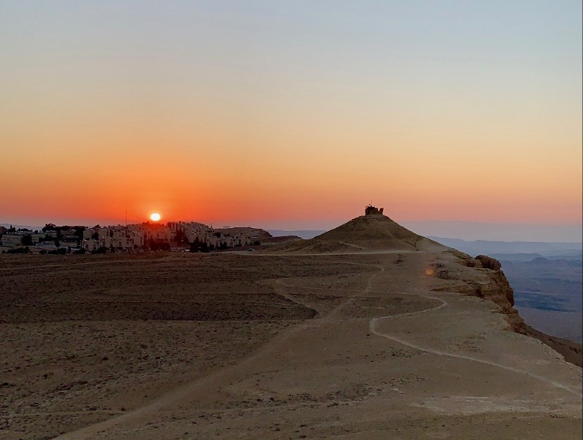
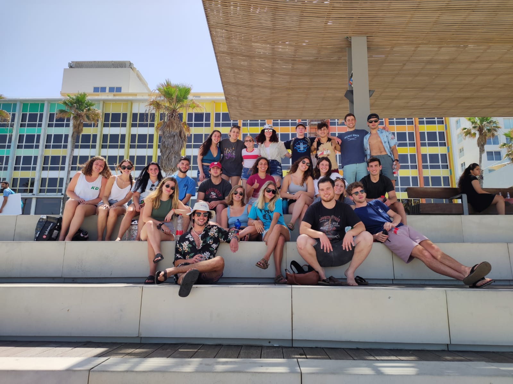

Take a journey with me to the Mediterranean Sea
Welcome to my website full of everything you need to know to enjoy your summer in Tel Aviv! During the summer of 2021, I had the oppourtunity to work and live in Tel Aviv. This website will guide you on a tour of the best food and activities to make your own trip as memorable as possible. It will also tell you about myself and what drove me to travel to Israel for the summer!
Starting off, here is a little bit more about how I ended up interning in Israel while many people were stuck in remote jobs. Over the school year I applied to a program called Onward that finds students internships in Israel for the summer. After hearing about the program from some of my older camp friends, I couldn't wait to have the chance to go back to Israel for a few months. I ended up on the Boston program, which was designated for kids who either grew up in Boston or go to school there now. As I do neither, Connecticut does not have a program so I qualified for this one. It also happened to be a program a few of my friends from camp and from school were going on.
After getting into the program, I got to interview with a variety of design and technology start-ups. I ended up having the opportunity to work for this amazing small company called 24me. It was founded by a married couple who needed to fill an organizational need in their lives and left them creating two apps. Working for them and getting to design for their apps allowed me to learn so much in my time there. I grew so much as a designer and also gained valuable experience working in a different country.
Although the summer was full of work, I still had plenty of time to travel and go on adventures around the country. We didn't just stay in Tel Aviv the whole time, but got to travel for weekends to places like Eilat, Haifa, and Jerusalem. We spent many days at the beach, ate so much delicious food, and got to immerse ourselves in the Israeli culture. I met so many new people and made amazing memories on every step of this journey. The friends I met in Israel are people who I know will be friends for life. I am so lucky to have had this experience, so if you are at all interested in this program I strongly recommend that you apply or reach out with any questions!